No es un asunto baladí.
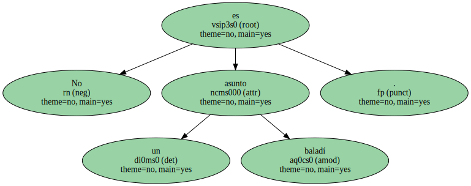Los técnicos negros han tenido proporcionalmente muchas menos oportunidades en la NCAA que en la NBA y unidos en torno a hombres como Thompson , Richardson o John Chaney , reclaman hoy justicia : los títulos nacionales ayudarían a ello.
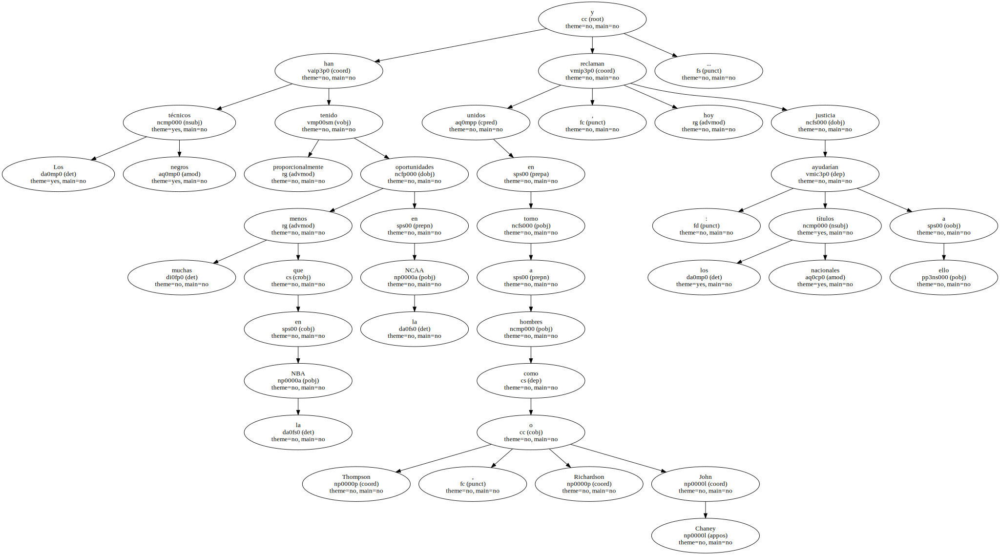Y sería curioso que Richardson lo lograse con el joven equipo actual y no con el famoso conjunto de hace dos temporadas.
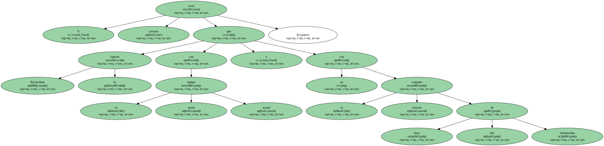Entonces el base Lee Mayberry , el ala-escolta Todd Day y el pívot Oliver Miller impresionaban a cualquiera.
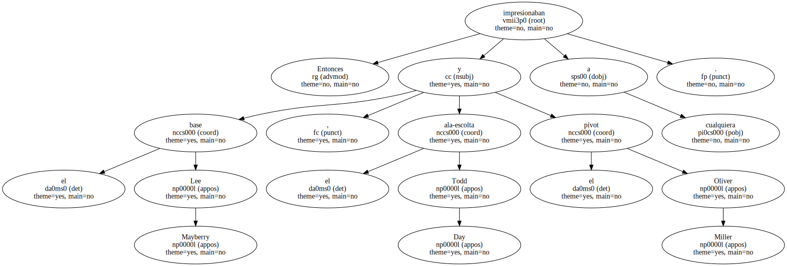Pero se solían quedar cortos a la hora de la verdad.
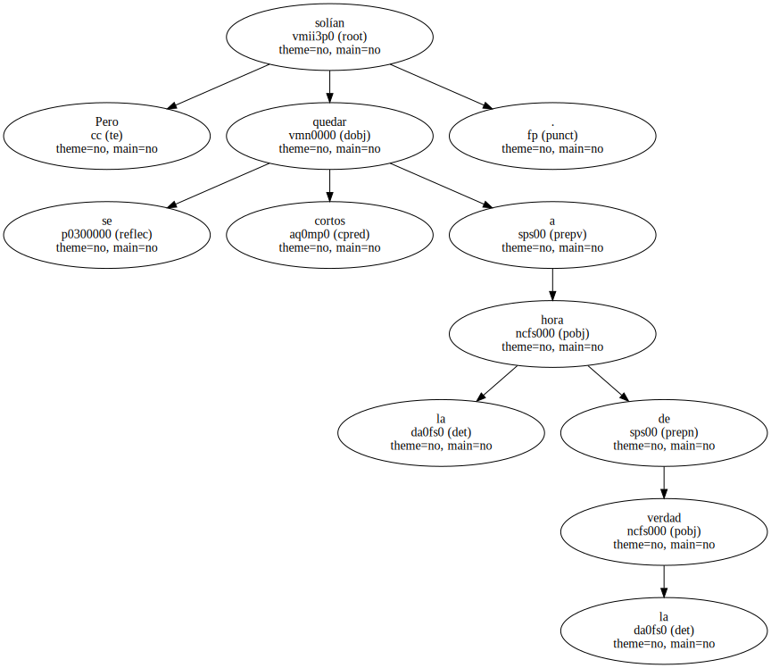Saltaron juntos a la NBA en 1992 , y ahí se ha podido ver que a Day le cuesta convertirse en el nuevo Sean Elliott ( va progresando en Milwaukee , pero sigue sin meter mucho más del 40 % de sus tiros ) , que Mayberry se ve limitado ( en el mismo equipo de los Bucks ) por su propensión a anotar más que a dirigir , y sólo es el suplente de Eric Murdock mientras que finalmente puede ser el menos - glamouroso - del trío , Miller , el que más favorablemente esté sorprendiendo en la Liga profesional : la semana pasada fue por primera vez - jugador de la semana - en la NBA , y pese a su talla modesta de 2,05 ( pero con una envergadura de casi 2,20 ) está resolviendo el agujero de los Suns en el pívot.
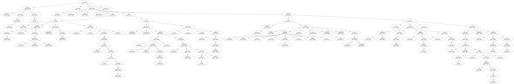Tras la triple graduación todos hablaron de - reconstrucción - de Arkansas.
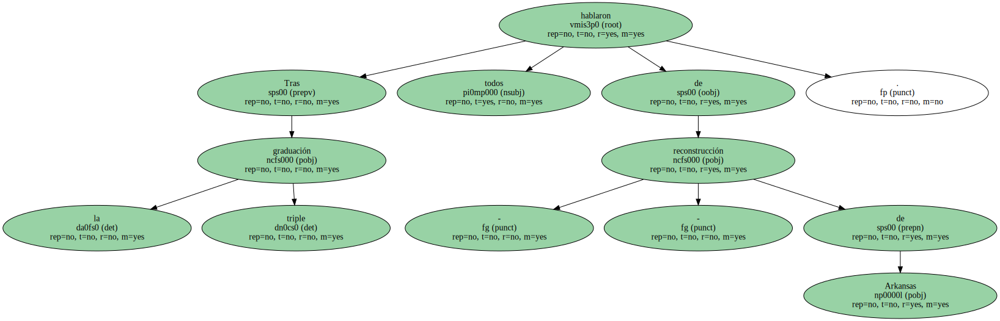Richardson no se inmutó , trajo a un grupo de adolescentes de buena reputación pero nula experiencia , y de entrada el equipo jugó al menos tan bien como el de los famosos : llegaron hasta los - Sweet 16 - del torneo de la NCAA y en ellos perdieron - in extremis - con North Carolina.
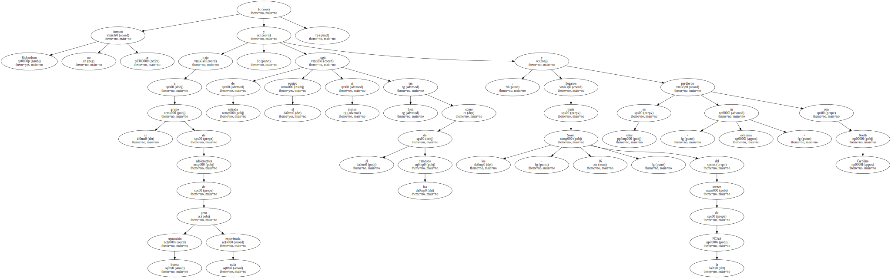Ya se sabe lo que North Carolina acabaría logrando.
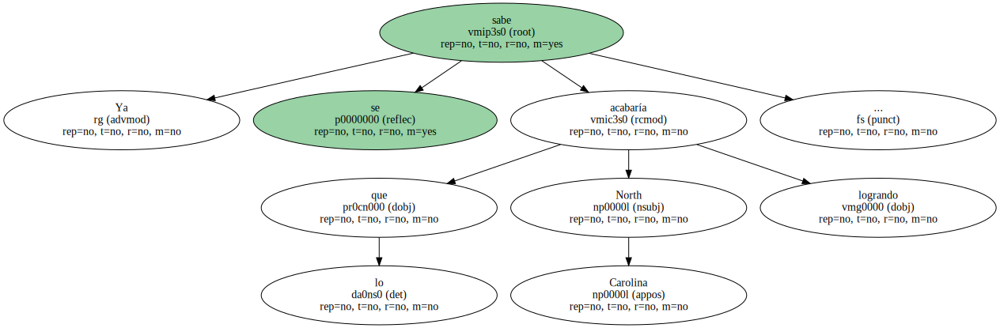El secreto ha estado en varios hombres que hay que apuntar : Scotty Thurman , un escolta de 1,96 que es uno de los más aventajados - hijos de Jordan - ; el alero y ala-pívot Corliss Williamson , de sólo dos metros pero con toda la fuerza de un Charles Barckley ; el ala-pívot Dwight Stewart ( 2,05 ) ; el duro base Corey Beck y este año el pívot de 2,10 Darnell Robinson , que aporta la dimensión de intimidación que faltaba.
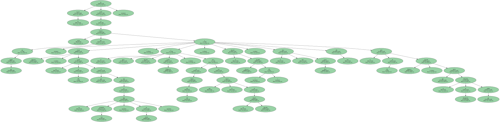El resultado está siendo fulminante.
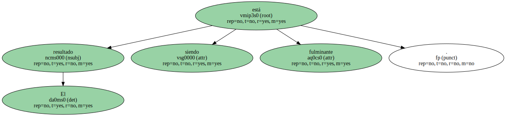Veremos cómo se enfrentan ahora al otro gallito de la Southeastern Conference , Kentucky , aunque la pérdida del pívot Rodney Dent ( lesión de ligamentos el pasado martes ante Vanderbilt ) puede condenar a los de Rick Pitino.
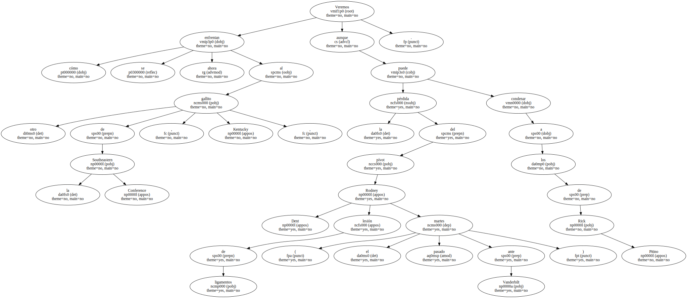Entre los dos equipos , más de media docena de candidatos al estrellato en la NBA.
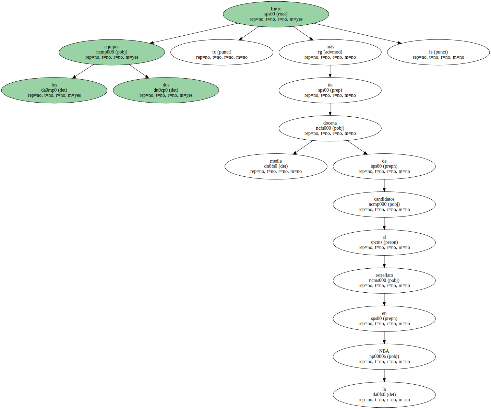Es inútil cantar hoy la gloria y la victoria del Barça.
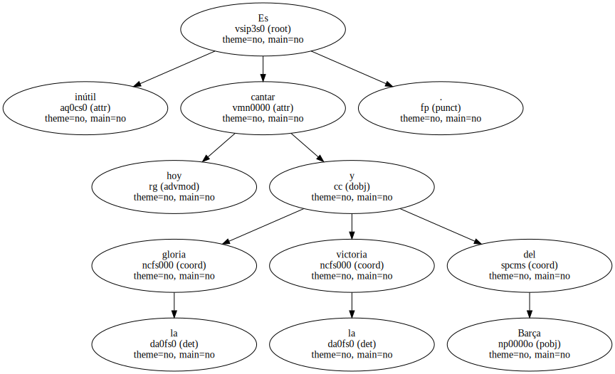Fue superior en todo a su rival y además 120.000 culés participaron en la triunfal noche llenando las gradas de blaugrana y de canción.
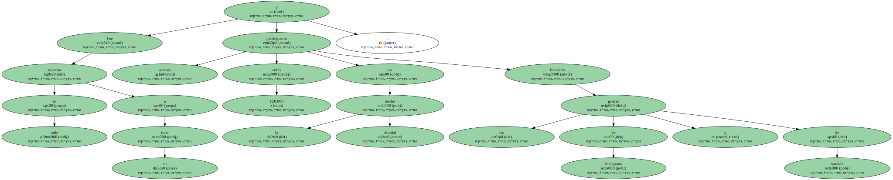No se merece el Madrid , por su historia , los males que padece , dentro y fuera del equipo , en donde solamente dos jugadores llevan con dignidad la camiseta del club : Michel y Buyo.

No cuento a Alfonso que se lesionó y nos privó de la posibilidad de juzgarlo.
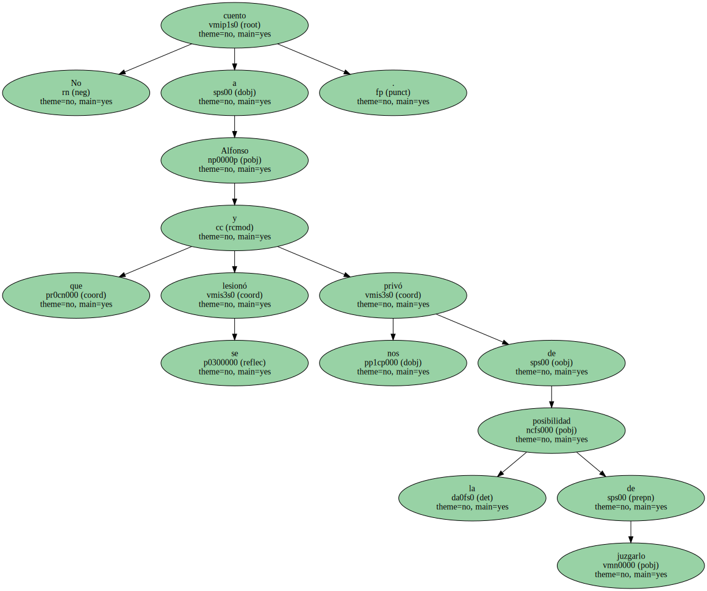La primera de las desgracias del Real Madrid se llama Ramón Mendoza.
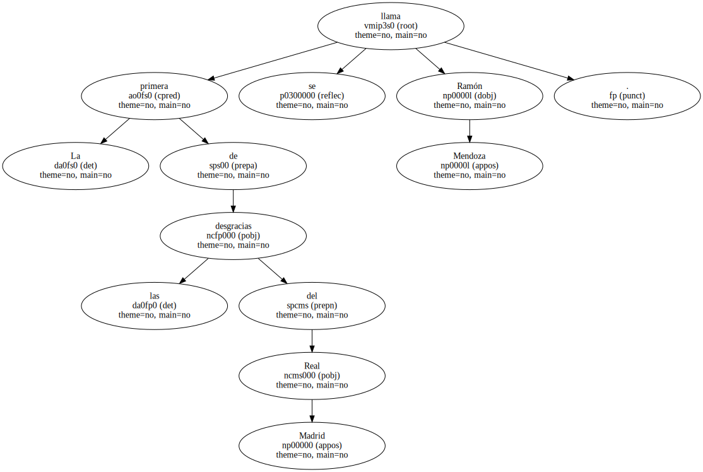Y probablemente habría que añadir a ese endémico mal el sarpullido llamado Chencho Arias.
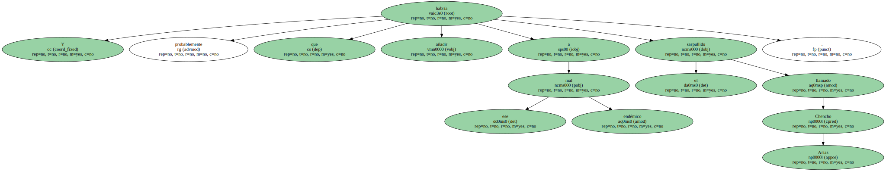En tanto que culé , yo debiera desear que esa pareja perdurara años y años en la dirección del único equipo de fútbol que hace vibrar permanentemente al Barça.
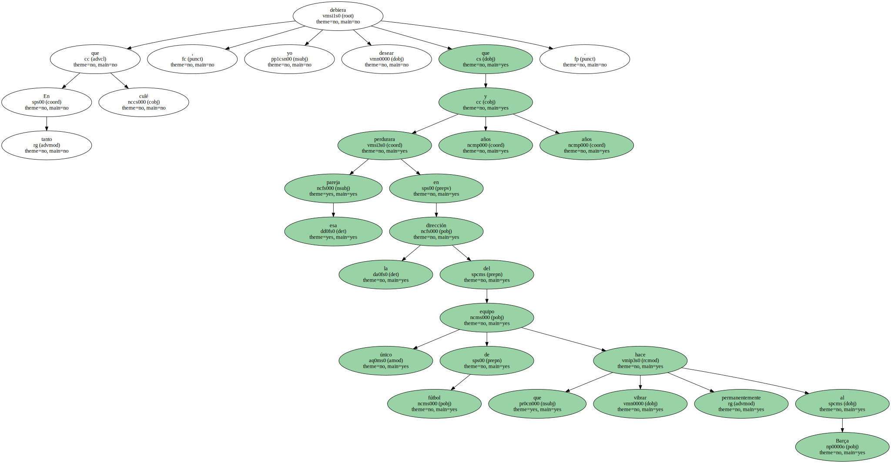Pero tengo buenos amigos en Madrid y del Real Madrid y por ellos desearía gente más seria y responsable en la gestión del club blanco.
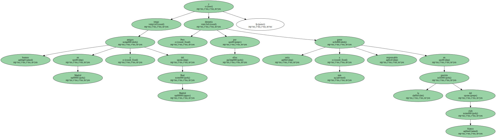